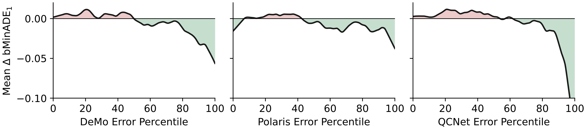
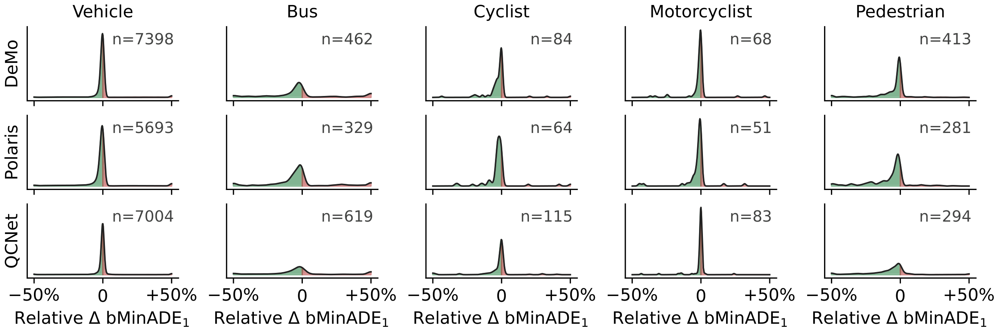
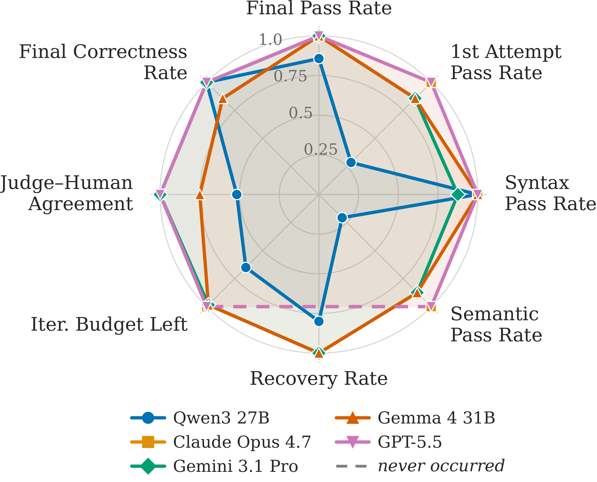
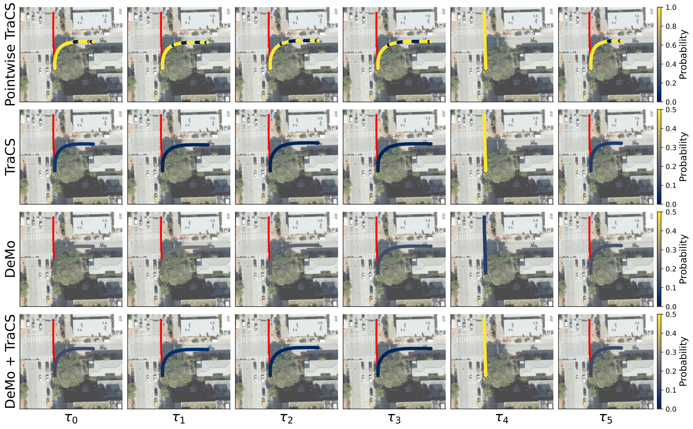

Abstract
Accurate and interpretable motion prediction for heterogeneous traffic spaces, including pedestrians, bicycles, cars, and trucks, is essential for safe autonomous navigation. Nevertheless, state-of-the-art approaches remain predominantly black-box, lacking explicit encoding of the regulatory and behavioral constraints of real-world mobility. We propose Trajectory Compliance-Shaping (TraCS), a neuro-symbolic framework that augments existing black-box motion prediction backbones with interpretable and probabilistic first-order logic. To do so, TraCS employs an agentic code-generation pipeline to bridge the gap between natural-language descriptions of traffic regulations and probabilistic motion prediction. Furthermore, TraCS employs a reactive data-streaming inference engine that maintains and efficiently updates compliance landscapes as scenes evolve. To prevent TraCS from overconfidently steering the backbone's predictions in the wrong direction, we propose a neural confidence rating learned as a context-aware attenuation of the compliance signal. We demonstrate on the Argoverse 2 benchmark how TraCS consistently improves state-of-the-art prediction backbones, showing that probabilistic and symbolic compliance reasoning is a broadly applicable and computationally efficient complement to purely neural motion predictors.
How TraCS Works
Given a natural-language description of the traffic regulations that apply to a scene, TraCS uses an agentic LLM pipeline — a coder, a judge, and a compiler as a verifier tool — to iteratively produce a declarative probabilistic logic program that formalizes the rule. These programs are grounded in Transitional Statistical Relational Maps, which estimate uncertain spatial relations, such as distance, crossing, or lane occupancy, directly from the scene geometry and agent state transitions.
For every candidate trajectory proposed by a motion-forecasting backbone, TraCS performs exact weighted model counting over the compiled program to obtain a probability of compliance, and reshapes the backbone's trajectory distribution towards the more compliant proposals via a log-linear opinion pool. All scores are maintained by a reactive inference engine, so that only the sub-formulas touched by a scene update are recomputed, keeping TraCS efficient enough to run alongside the prediction backbone.
Because a hand- or LLM-written compliance program is never a perfect model of real traffic, TraCS learns a per-backbone trust network that predicts when its symbolic signal is likely to help. A validation-calibrated threshold gates the fusion accordingly, letting TraCS steer predictions when it is confident and otherwise leave the backbone's own distribution untouched.
Key Results

TraCS as a tail-risk treatment. Smoothed conditional mean change in bMinADE1 (lower is better) per scenario as a function of backbone-error percentile, for each backbone. The effect is flat where the backbone is already strong and improves sharply in the worst-error decile, where the backbone is least reliable.

TraCS improves calibration across modes of mobility. Kernel density estimates of the change in bMinADE1 when TraCS's gate fires, by focal-agent class. Under-represented classes (buses, cyclists, pedestrians) shift most towards improvement, while the vehicle class, already well handled by the backbones, stays concentrated around zero.
More Results

Agentic traffic modeling. Across open-weight and foundation models, not all are able to produce the correct syntax and semantics for encoding the natural-language descriptions.

TraCS shaping a backbone prediction. A bus proceeds straight through a four-way intersection (red ground-truth trajectory). While the backbone (here, DeMo) has no clear preference among its proposals, TraCS correctly recognizes unlikely or non-compliant behavior and shifts probability mass towards the correct proposal, promoting it from the lowest- to the highest-rated candidate.
BibTeX
@article{kohaut2026tracs,
title={Driving, Fast or Slow? Neuro-Symbolic Guidance for Motion Prediction in Multi-Modal Ground Mobility},
author={Kohaut, Simon and Divo, Felix and Hahnewald, Julius and Flade, Benedict and Eggert, Julian and Kersting, Kristian and Dhami, Devendra Singh},
journal={arXiv preprint arXiv:2606.15251},
year={2026},
}